Global Tech Think Tank Watch
国际科技智库周报
本周态势
本周形成 13 条 P0/P1 重点，议题集中在AI、数字基础设施与技术治理、产业链、制造与能源基础设施。产业链、制造与能源信号 3 条；AI 与数字基础设施信号 9 条；直接涉华条目 2 条。
本周必读
- AI, China, and the New Risks to U.S. Security: Q&A with Matan Chorev研判 该材料可从以下要点把握：Matan Chorev is vice president and director of RAND Global and Emerging Risks.证据 In this Q&A, he discusses some of the most consequential challenges facing the United States and the world.
- Tracking Pax Silica’s Evolution: A Timeline研判 该材料可从以下要点把握：Major agreements, new participants, and key diplomatic and industrial milestones in the U.证据 上述内容应作为后续中文精读、关键词标注和政策比较的主要证据入口。
- Policy Measures to Enhance Manufacturing Data Utilization for AI Transformation (AX) in Manufacturing Firms: A Supply Chain-Based Approach研判 该材料可从以下要点把握：364 Policy Measures to Enhance Manufacturing Data Utilization for AI Transformation (AX) in Manufacturing Firms: A Supply Chain-Based Approach ｜Vol.证据 2026｜ Policy Measures to Enhance Manufacturing Data Utilization for AI Transformation (AX) in Manufacturing Firms: A Supply Chain-Based Approach Kiyoon Shin · Y...
- Outpaced: AI and Policy's Role in Transforming Cybersecurity Compliance研判 该材料可从以下要点把握：P olicy Br ief Outpaced AI and P olicy’s R ole in T r ansf or ming Cybersecur ity Com pliance Aut hor K at her ine Car r oll August 2026 Center for Security and Emergin...证据 However, the ATO process and its governing framework—the Risk Management Framework (RMF)—are described as ineffective, slow, duplicative, and in need of reform.
- The Cyberattacks on the U.S Water Sector and the Iran Question: Escalation or Opportunism?研判 该材料可从以下要点把握：It is highly likely that Iran is behind the cyberattacks on the U.S.证据 Psychological effect—not escalation—is the point of Iran’s cyber operations, to sow fear, chaos, and division as part of its information warfare strategy.
议题观点速览
AI、数字基础设施与技术治理（2 条）
- RAND：该材料可从以下要点把握：Large language model agents demonstrate an emerging ability to use biological tools...
- Center for Security and Emerging Technology：该材料可从以下要点把握：P olicy Br ief Outpaced AI and P olicy’s R ole in T r ansf or ming Cybersecur ity Co...
产业链、制造与能源基础设施（2 条）
- Information Technology and Innovation Foundation：该材料可从以下要点把握：Major agreements, new participants, and key diplomatic and industrial milestones in...
- Science and Technology Policy Institute Korea：该材料可从以下要点把握：364 Policy Measures to Enhance Manufacturing Data Utilization for AI Transformation...
涉华科技竞争与上海参考（2 条）
- RAND：该材料可从以下要点把握：Matan Chorev is vice president and director of RAND Global and Emerging Risks.
- Information Technology and Innovation Foundation：该材料可从以下要点把握：China is not only investing more in innovation but also becoming better at turning t...
科研体系、人才与创新政策（2 条）
- Center for Strategic and International Studies：该材料可从以下要点把握：Democracy Under Stress and the Transformation of the Global Order Photo: YAMIL LAGE/...
- Information Technology and Innovation Foundation：该材料可从以下要点把握：Arbitrary funding cuts and increased political involvement in grantmaking will furth...
本期目录
- P0主题 01｜AI, China, and the New Risks to U.S. Security: Q&A with Matan Chorev
- P0主题 02｜Tracking Pax Silica’s Evolution: A Timeline
- P0主题 03｜China Isn’t Just Spending More on Innovation—It’s Getting Better at Innovation
- P0主题 04｜Testing Large Language Model Agents on the Use of Biological Tools for Nucleic Acid Synthesis Screening Evasion
- P0主题 05｜Policy Measures to Enhance Manufacturing Data Utilization for AI Transformation (AX) in Manufacturing Firms: A Supply Chain-Based Approach
- P1主题 06｜Outpaced: AI and Policy's Role in Transforming Cybersecurity Compliance
- P1主题 07｜Modernizing Department of the Air Force Training and Education Approaches: Leveraging Stackable Certificates for Artificial Intelligence and Advanced Technologies
- P1主题 08｜The Cyberattacks on the U.S Water Sector and the Iran Question: Escalation or Opportunism?
- P1主题 09｜Assessing the Energy Potential of Artificial Intelligence Data Center Sites: A Framework for Comparing Site Suitability
- P1主题 10｜Respirator Surge Manufacturing: Options to Ensure U.S. Small and Medium-Sized Enterprises Can Surge the Manufacturing of Respiratory Personal Protective Equipment
- P1主题 11｜Democracy Under Stress and the Transformation of the Global Order
- P1主题 12｜The US Science System Needs Reform, Not Arbitrary Funding Cuts
- P1主题 13｜New evidence on data center employment effects
AI, China, and the New Risks to U.S. Security: Q&A with Matan Chorev
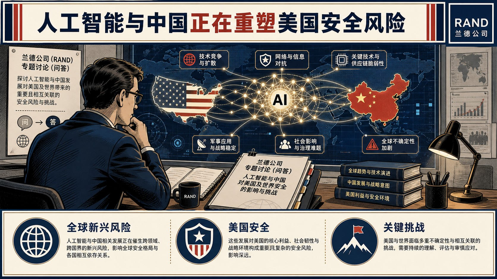
该材料可从以下要点把握：Matan Chorev is vice president and director of RAND Global and Emerging Risks.
AI, China, and the New Risks to U.S. Security: Q&A with Matan Chorev
论证与政策含义
- In this Q&A, he discusses some of the most consequential challenges facing the United States and the world.
- 上述内容应作为后续中文精读、关键词标注和政策比较的主要证据入口。
Tracking Pax Silica’s Evolution: A Timeline
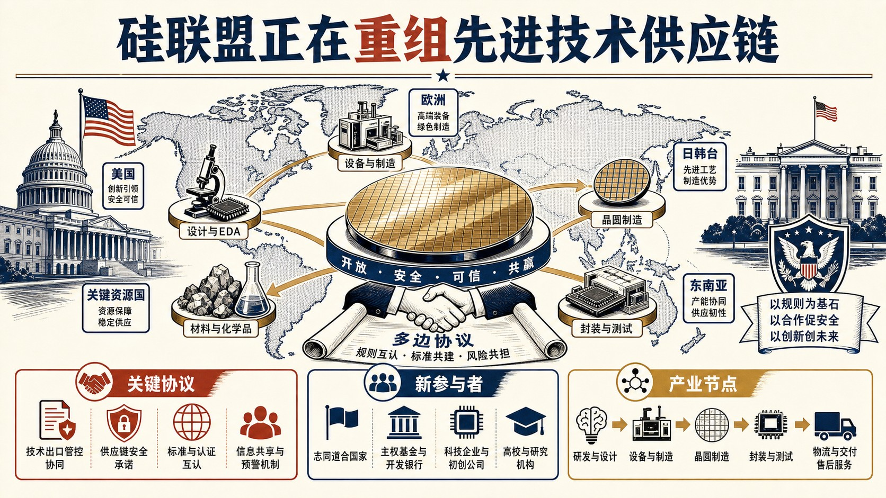
该材料可从以下要点把握：Major agreements, new participants, and key diplomatic and industrial milestones in the U.
Tracking Pax Silica’s Evolution: A Timeline
论证与政策含义
- 上述内容应作为后续中文精读、关键词标注和政策比较的主要证据入口。
China Isn’t Just Spending More on Innovation—It’s Getting Better at Innovation
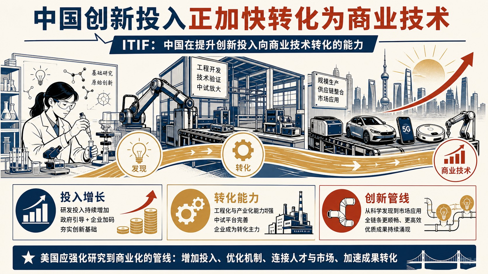
该材料可从以下要点把握：China is not only investing more in innovation but also becoming better at turning those investments into technologies with commercial potential.
China Isn’t Just Spending More on Innovation—It’s Getting Better at Innovation
论证与政策含义
- To maintain its technological leadership, the United States should strengthen its entire innovation pipeline, from research to commercialization.
- 上述内容应作为后续中文精读、关键词标注和政策比较的主要证据入口。
政策建议
自动识别到的政策含义与建议线索包括：China is not only investing more in innovation but also becoming better at turning those investments into technologies with commercial potential.中国 / 上海参考
对中国/上海研判的参考在于：该材料提供了涉华技术能力、人才流动、产业链位置或政策工具的比较证据。关键原文线索包括：China is not only investing more in innovation but also becoming better at turning those investments into technologies with commercial potential.Testing Large Language Model Agents on the Use of Biological Tools for Nucleic Acid Synthesis Screening Evasion
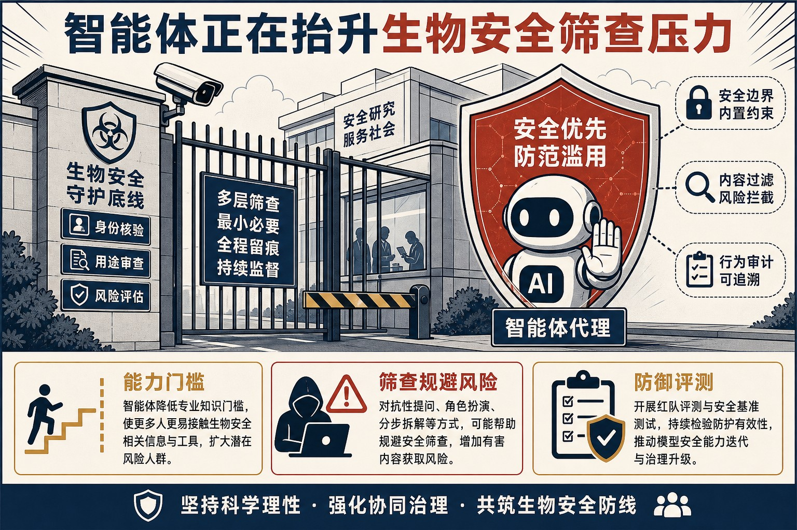
该材料可从以下要点把握：Large language model agents demonstrate an emerging ability to use biological tools to redesign peptides and proteins for nucleic acid synthesis screening evasion, indicating that agents could lower expertise...
Testing Large Language Model Agents on the Use of Biological Tools for Nucleic Acid Synthesis Screening Evasion
论证与政策含义
- 上述内容应作为后续中文精读、关键词标注和政策比较的主要证据入口。
Policy Measures to Enhance Manufacturing Data Utilization for AI Transformation (AX) in Manufacturing Firms: A Supply Chain-Based Approach
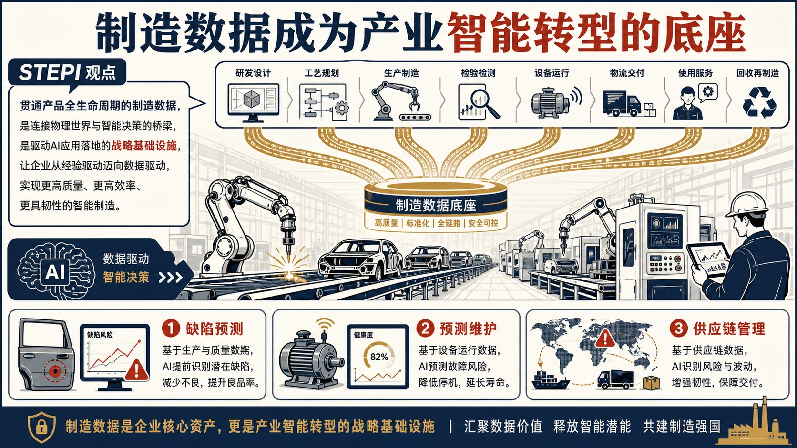
该材料可从以下要点把握：364 Policy Measures to Enhance Manufacturing Data Utilization for AI Transformation (AX) in Manufacturing Firms: A Supply Chain-Based Approach ｜Vol.
Policy Measures to Enhance Manufacturing Data Utilization for AI Transformation (AX) in Manufacturing Firms: A Supply Chain-Based Approach
论证与政策含义
- 2026｜ Policy Measures to Enhance Manufacturing Data Utilization for AI Transformation (AX) in Manufacturing Firms: A Supply Chain-Based Approach Kiyoon Shin · Yoonhwan Oh · Jungsub Yoon · Sula Jin STEPI Insight | VOL.
- - In the era of manufacturing AX, manufacturing data has evolved from simple production records into a strategic asset th at enables defect prediction, predictive maintenance, process optimization, production planning, energy efficiency, an...
- 上述内容应作为后续中文精读、关键词标注和政策比较的主要证据入口。
政策建议
自动识别到的政策含义与建议线索包括：364 Policy Measures to Enhance Manufacturing Data Utilization for AI Transformation (AX) in Manufacturing Firms: A Supply Chain-Based Approach ｜Vol.Outpaced: AI and Policy's Role in Transforming Cybersecurity Compliance
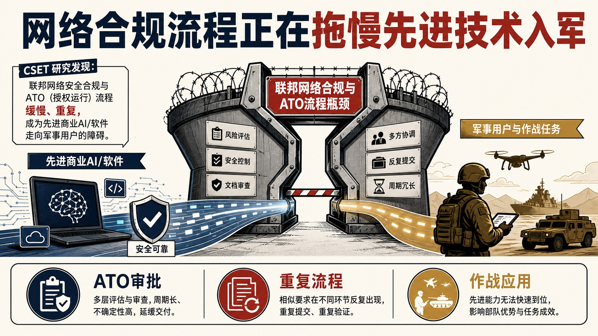
该材料可从以下要点把握：P olicy Br ief Outpaced AI and P olicy’s R ole in T r ansf or ming Cybersecur ity Com pliance Aut hor K at her ine Car r oll August 2026 Center for Security and Emerging Technology | 1 Executive Summary Ameri...
Outpaced: AI and Policy's Role in Transforming Cybersecurity Compliance
论证与政策含义
- That advantage does not automatically transfer to the military.
- The federal cybersecurity compliance process is a major barrier between America’s most advanced technologies and the warfighters who need them.
- The Authorization to Operate (ATO) is the federal government’s formal mechanism for assessing and approving software systems.
- However, the ATO process and its governing framework—the Risk Management Framework (RMF)—are described as ineffective, slow, duplicative, and in need of reform.1 Bureaucratic delays can carry a devastating cost.
政策建议
自动识别到的政策含义与建议线索包括：The federal cybersecurity compliance process is a major barrier between America’s most advanced technologies and the warfighters who need them.Modernizing Department of the Air Force Training and Education Approaches: Leveraging Stackable Certificates for Artificial Intelligence and Advanced Technologies
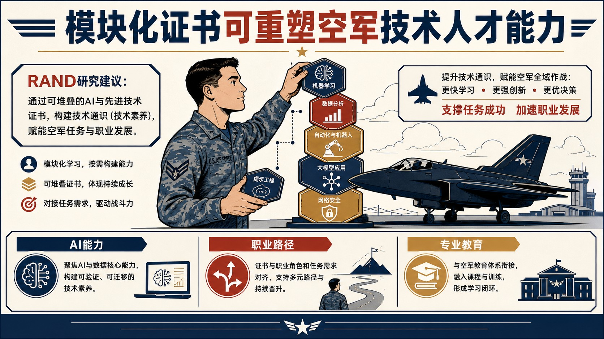
该材料可从以下要点把握：Stackable certificate programs in artificial intelligence and advanced technologies could build technological fluency in U.S.
Modernizing Department of the Air Force Training and Education Approaches: Leveraging Stackable Certificates for Artificial Intelligence and Advanced Technologies
论证与政策含义
- Department of the Air Force critical missions and career fields and modernize existing professional military education.
- 上述内容应作为后续中文精读、关键词标注和政策比较的主要证据入口。
政策建议
自动识别到的政策含义与建议线索包括：Stackable certificate programs in artificial intelligence and advanced technologies could build technological fluency in U.S.The Cyberattacks on the U.S Water Sector and the Iran Question: Escalation or Opportunism?
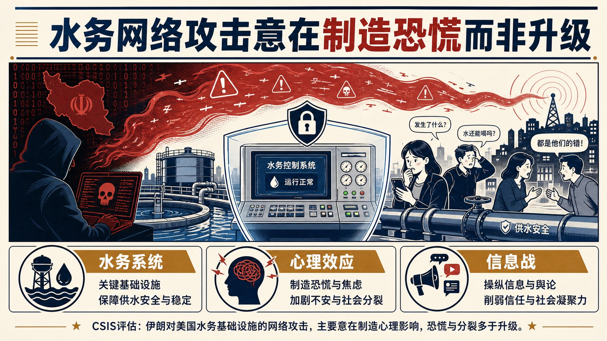
该材料可从以下要点把握：It is highly likely that Iran is behind the cyberattacks on the U.S.
The Cyberattacks on the U.S Water Sector and the Iran Question: Escalation or Opportunism?
论证与政策含义
- Psychological effect—not escalation—is the point of Iran’s cyber operations, to sow fear, chaos, and division as part of its information warfare strategy.
- 上述内容应作为后续中文精读、关键词标注和政策比较的主要证据入口。
政策建议
自动识别到的政策含义与建议线索包括：Psychological effect—not escalation—is the point of Iran’s cyber operations, to sow fear, chaos, and division as part of its information warfare strategy.Assessing the Energy Potential of Artificial Intelligence Data Center Sites: A Framework for Comparing Site Suitability
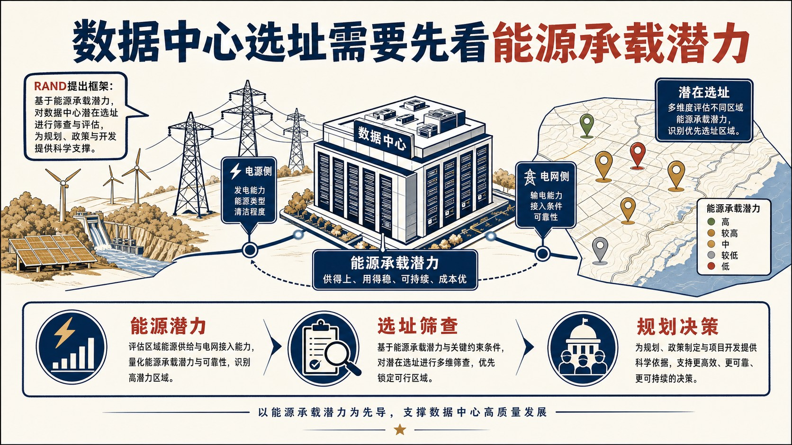
该材料可从以下要点把握：This brief describes a framework designed to assess possible data center sites for their energy potential.
Assessing the Energy Potential of Artificial Intelligence Data Center Sites: A Framework for Comparing Site Suitability
论证与政策含义
- The framework is intended to serve as an energy-potential screening tool for planners, policymakers, and developers.
- 上述内容应作为后续中文精读、关键词标注和政策比较的主要证据入口。
政策建议
自动识别到的政策含义与建议线索包括：The framework is intended to serve as an energy-potential screening tool for planners, policymakers, and developers.Respirator Surge Manufacturing: Options to Ensure U.S. Small and Medium-Sized Enterprises Can Surge the Manufacturing of Respiratory Personal Protective Equipment
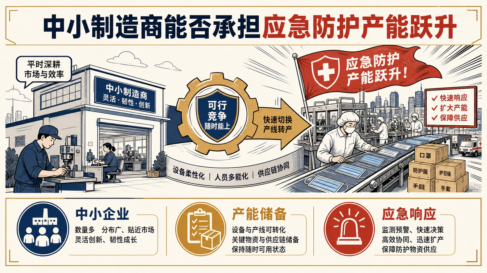
该材料可从以下要点把握：Small and medium-sized enterprises stepped up production of personal protective equipment in response to the coronavirus disease 2019 pandemic and could do so again if the conditions exist for them to remain...
Respirator Surge Manufacturing: Options to Ensure U.S. Small and Medium-Sized Enterprises Can Surge the Manufacturing of Respiratory Personal Protective Equipment
论证与政策含义
- 上述内容应作为后续中文精读、关键词标注和政策比较的主要证据入口。
Democracy Under Stress and the Transformation of the Global Order
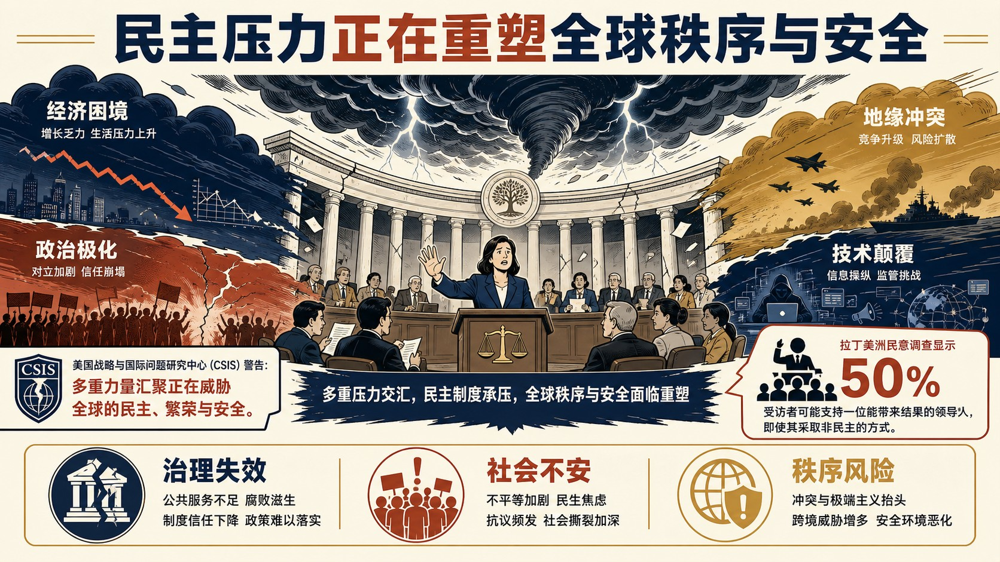
该材料可从以下要点把握：Democracy Under Stress and the Transformation of the Global Order Photo: YAMIL LAGE/AFP via Getty Images Commentary by Evan Ellis Published August 12, 2026 This work is adapted from an address made to the Int...
Democracy Under Stress and the Transformation of the Global Order
论证与政策含义
- A convergence of forces is currently transforming the global environment, posing grave risks to democracy, prosperity and security.
- In a poll by Latinobarometro , half of those surveyed in Latin America said they would support a leader who could deliver results, even if it were necessary to adopt nondemocratic solutions to do so.
- In the Americas, and in other parts of the world, there is a rising threat to both democracy and to order and prosperity.
- Democratic societies have throughout history have become disillusioned with the inadequate performance of their governments, particularly with respect to their material needs and insecurity.
政策建议
自动识别到的政策含义与建议线索包括：Democracy Under Stress and the Transformation of the Global Order Photo: YAMIL LAGE/AFP via Getty Images Commentary by Evan Ellis Published August 12, 2026 This work is adapted from an address made to the Interamerican Institute on Democracy on July 30, 2026. Such technology has enabled levels of state control over society that the government of the former Soviet Union only aspired to.中国 / 上海参考
对中国/上海研判的参考在于：该材料提供了涉华技术能力、人才流动、产业链位置或政策工具的比较证据。关键原文线索包括：Nowhere is this more visible than in the People’s Republic of China (PRC), where cameras with facial recognition—linked to citizen financial and other data, internet controls, and public transportation—have all made reality of what philosopher Jeremy Bentham called the Panopticon . This includes architectures in China and in authoritarian allies that have received Chinese systems, including the Fathe...The US Science System Needs Reform, Not Arbitrary Funding Cuts
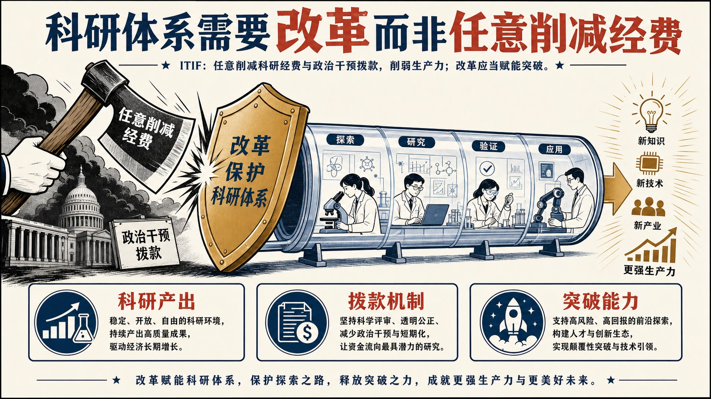
该材料可从以下要点把握：Arbitrary funding cuts and increased political involvement in grantmaking will further weaken an already less productive U.S.
The US Science System Needs Reform, Not Arbitrary Funding Cuts
论证与政策含义
- Policymakers should pursue reforms that enable researchers to generate more breakthroughs and strengthen U.S.
- 上述内容应作为后续中文精读、关键词标注和政策比较的主要证据入口。
政策建议
自动识别到的政策含义与建议线索包括：Policymakers should pursue reforms that enable researchers to generate more breakthroughs and strengthen U.S.New evidence on data center employment effects
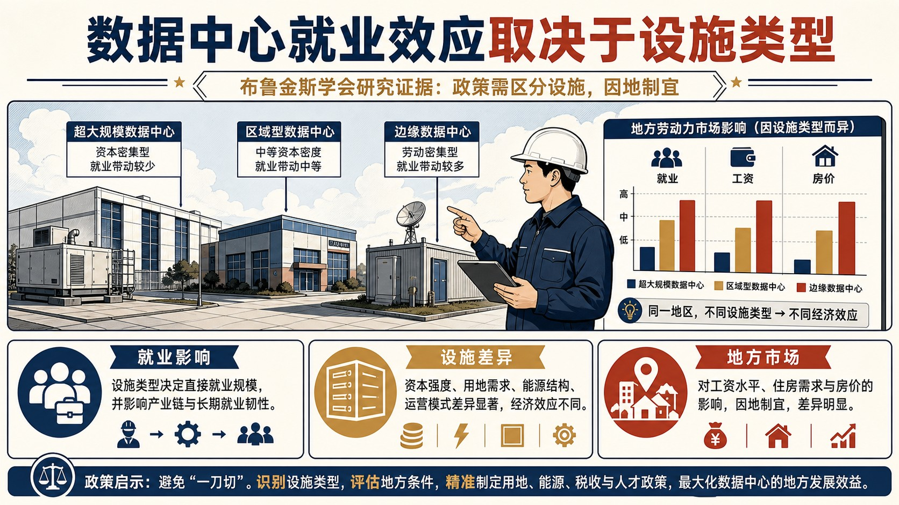
该材料可从以下要点把握：Research New evidence on data center employment effects Dany Bahar and Dany Bahar Co-Director, Migration and Displacement and Senior Fellow - Center for Global Development Greg Wright Greg Wright Nonresident...
New evidence on data center employment effects
论证与政策含义
- Mark Felix/AFP via Getty Images 7 min read Print Editor's note: This piece has been updated to reflect new results as the research continues with an expanded sample.
- Previous findings related to data center effects on employment, wages, and home prices have been revised.
- The brief summarizes findings from “Data Centers and Local Labor Markets” by Dany Bahar and Greg Wright.
- The full paper is available from the authors.